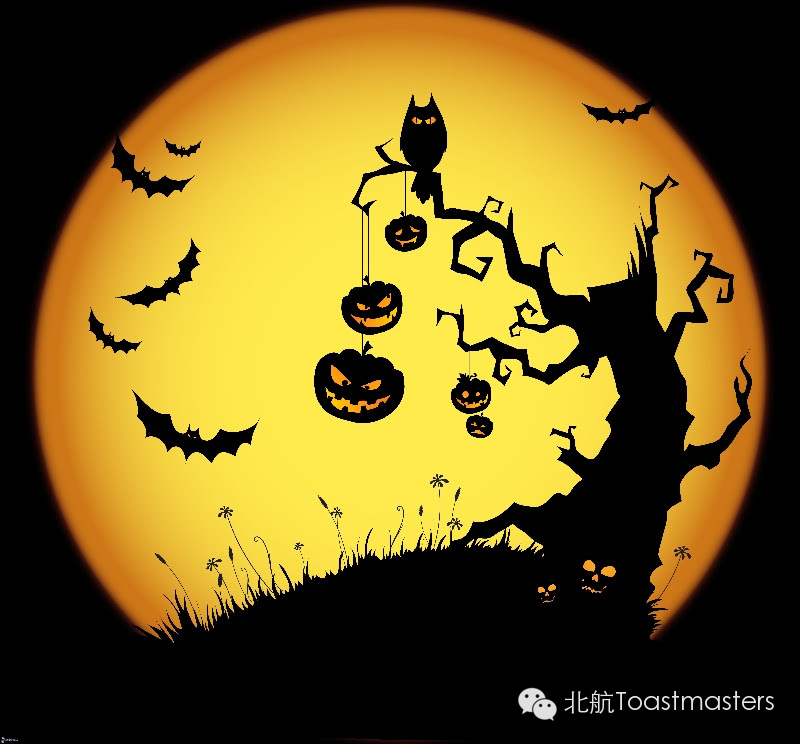
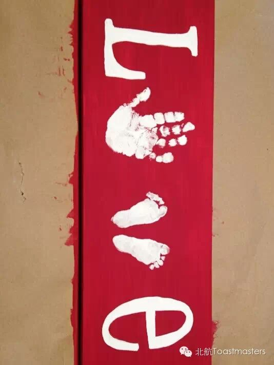

Halloween
Time: 19:30-21:30, Friday, Oct. 31th
Venue: Room A209, New Main Building, Beihang University

Toastmaster: Dale
Table Topic Master: William
If somebody whose favourite food is pumpkin, who like the film - "Saw" very much, who never miss any episode of "The Walking Dead", meantime, whose idea partner is a witch or wizard, then guys, in your opinion, which holiday does this guy probably like? I think it must be Halloween. Halloween is celebrated on October 31st every year, which is a western traditional festival. It is thrilling and has a kind of mystery. If you feel excited about it, come to our meeting! If not, come all the same, because our meeting will not only talk about Halloween, but also be a great party.
This time, our Table Topic Master is William. This is the first time for him to take a role after he joined our club. But he is not a freshman at all. William lived in America for a long time and he is very familiar with American culture, so I believe he will give us some very interesting questions in this Table Topic section. Let's wait and see!
Prepared Speech
Love is Troublesome
CC1 Lucia

For most of us, we think love is a beautiful thing, which is full of happiness, hope or something like that. Many people want to love and to be loved. Why Lucia thinks Love is Troublesome? I think there must be some reasons. Maybe Lucia's experience can give us a new perspective of love. Maybe Lucia's opinion can let us think more about what is real love. Or maybe Lucia's story can make us know someone we love more deeply. What will Lucia tell us about LOVE? I am strongly expecting! How about you?
Prepared Speech
Tips for Avoiding Ebola
CC1 Sara
Ebola is a terrible disease. The 2014 Ebola epidemic is the largest in history, affecting multiple countries in West Africa and two imported cases in the United States. So it is necessary to learn something about how to avoid Ebola. In this meeting, our new member Sara will give us some tips for avoiding Ebola. In my opinion, only everyone knowing how to avoid Ebola can our human being defeat this terrible disease. So, let's wait and see Sara's speech. I believe you will learn a lot.
Map
Attention! Our meeting room changed BACK to Room A209, New Main Building, Beihang University (北航新主楼A209房间). And you can phone to Deron for help.
TEL: 180-0125-3933

https://mp.weixin.qq.com/s/NXevCN9187czb1MCMuYMsw
本页为抢救式本地归档，图文已永久保存。